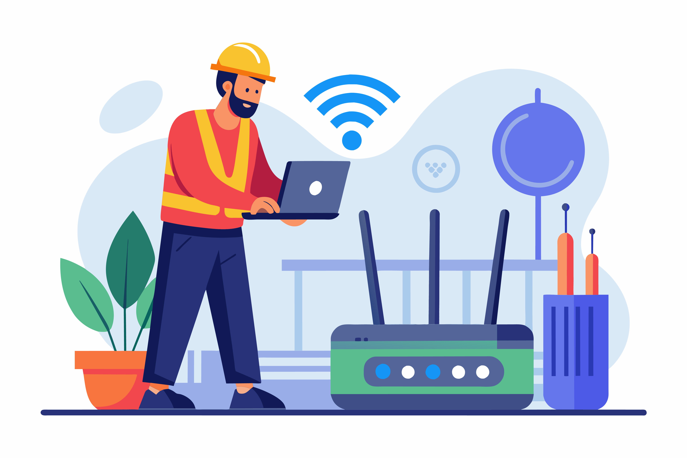

Konsultasi-kan Permasalahan Wifi Anda
Rp 750.000 /Sesi Konsultasi

Jaringan WiFi lambat, sering putus, atau tidak menjangkau seluruh area? Masalah jaringan bisa sangat mengganggu produktivitas dan kenyamanan. Layanan konsultasi troubleshooting WiFi kami hadir untuk mendiagnosis akar masalah dan memberikan solusi efektif agar jaringan Anda kembali optimal.
Layanan Troubleshooting Kami Meliputi:
- Diagnosa Akurat oleh Ahli Jaringan: Tim kami akan melakukan analisis menyeluruh terhadap konfigurasi jaringan, perangkat, interferensi, dan faktor lain yang mungkin menyebabkan masalah.
- Penyelesaian Terhadap Dead-Zones (Area Tanpa Sinyal): Identifikasi penyebab dead-zones dan rekomendasi solusi, seperti penempatan ulang router/AP, penggunaan repeater/mesh WiFi, atau upgrade perangkat.
- Optimalisasi Kecepatan dan Stabilitas: Penyesuaian konfigurasi channel, bandwidth, firmware perangkat, dan eliminasi sumber interferensi untuk meningkatkan performa jaringan.
- Konfigurasi Keamanan Lanjutan: Review dan penguatan keamanan jaringan, termasuk enkripsi (WPA3 direkomendasikan), password yang kuat, filtering MAC Address, dan pembaruan firmware untuk proteksi data.
- Include Mikrotik Controller: Untuk jaringan yang lebih kompleks, Tim kami akan menambahkan Mikrotik RouterOS sebagai controller jaringan agar dapat memberikan kontrol dan fitur manajemen yang lebih canggih.
- Laporan Diagnosa dan Rekomendasi Solusi: Anda akan menerima laporan detail mengenai temuan masalah, langkah-langkah yang telah dilakukan, dan rekomendasi perbaikan jangka panjang.
- Jaminan Masalah Teratasi atau Konsultasi Lanjutan: Kami berkomitmen untuk menyelesaikan masalah Anda. Jika masalah belum teratasi, kami akan memberikan opsi konsultasi lanjutan atau solusi alternatif.
Proses Troubleshooting Kami:
- Sesi Awal & Pengumpulan Informasi: Diskusi mengenai gejala masalah, riwayat jaringan, perangkat yang digunakan, dan denah lokasi. (Ini yang dicakup biaya Rp 750.000).
- Diagnosa On-Site atau Remote (sesuai kebutuhan): Teknisi kami akan melakukan pengecekan langsung di lokasi Anda atau melalui akses remote (jika memungkinkan) untuk menganalisis jaringan.
- Identifikasi Akar Masalah: Menggunakan tools dan keahlian kami untuk menemukan sumber utama dari masalah jaringan WiFi Anda.
- Implementasi Solusi Awal: Melakukan perbaikan langsung yang dapat dilakukan saat sesi diagnosa (misalnya, perubahan konfigurasi, penyesuaian channel).
- Rekomendasi Perbaikan Lanjutan: Jika diperlukan perbaikan yang lebih signifikan (misalnya, penggantian perangkat, penambahan AP), kami akan memberikan rekomendasi beserta estimasi biaya.
- Verifikasi & Pengujian: Setelah solusi diimplementasikan, kami akan melakukan pengujian untuk memastikan masalah telah teratasi dan jaringan berjalan optimal.
Biaya Layanan: Biaya sesi awal Rp 750.000 mencakup diagnosa, upaya perbaikan awal, dan add-on Mikrotik. sementara Biaya untuk pergantian perangkat baru atau pekerjaan instalasi tambahan akan diinformasikan terpisah.
Kapan Anda Membutuhkan Layanan Kami?
- Internet terasa sangat lambat padahal paket sudah tinggi.
- Sinyal WiFi sering hilang atau putus-putus.
- Ada area di rumah/kantor yang tidak terjangkau sinyal WiFi (dead-zones).
- Kesulitan menghubungkan perangkat baru ke jaringan WiFi.
- Khawatir tentang keamanan jaringan WiFi Anda.
- Sudah mencoba berbagai cara namun masalah tidak teratasi.